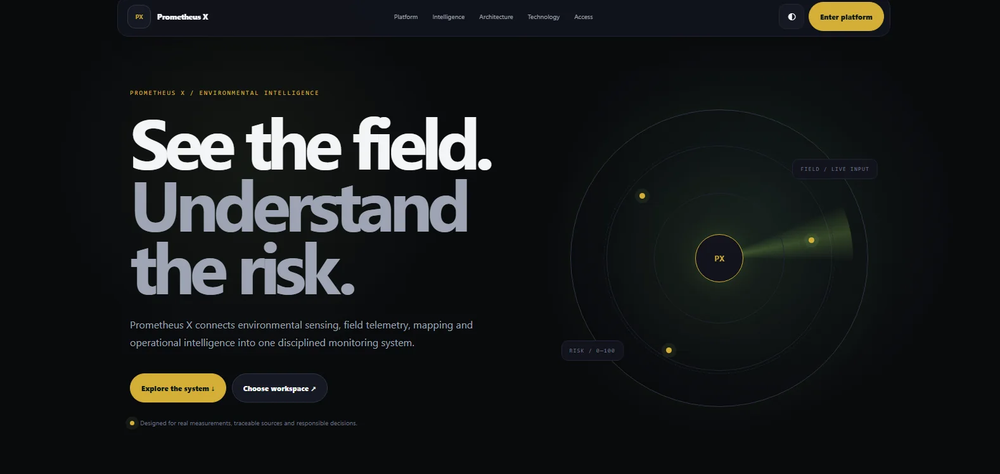

01 / SELECTED WORK
02 CASE STUDIES
Ideas made
tangible
A growing body of work shaped by curiosity, practical problem-solving, and the decision to build rather than leave an idea on paper.
PROJECT INDEX / 2026
PROJECT 01
WEB PLATFORM / PROTOTYPE
↗
Hire-
Nepal.
A recruitment platform prototype bringing job discovery, talent exploration, profiles, and hiring tasks into one connected experience.
Interface design
Frontend
Product flows
Read the case study ↗
 01 — PRODUCT INTERFACE
01 — PRODUCT INTERFACE
PROTOTYPE
VIEW PROJECT ↗
PROJECT 02
ENVIRONMENTAL MONITORING / SOFTWARE
↗
Prometheus
X.
Software for connected environmental monitoring, designed to present hardware data through a clear interface and controlled access.
Frontend
Backend
Access workflows
Read the case study ↗

02 — SOFTWARE INTERFACE
IN DEVELOPMENT
VIEW PROJECT ↗